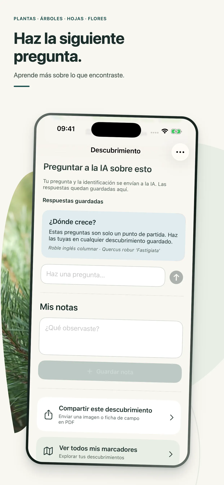

Un hogar consultable para los detalles que hicieron tuyo cada hallazgo.
Identificador de plantas con IA · colección privada
Descubre qué
ha captado tu mirada.
Identifica plantas, árboles, hojas, flores, corteza y madera con una foto. Pregunta qué hace especial el hallazgo y guárdalo para volver a él.
- Primera identificación gratis
- Sin cuenta
- Tu colección se queda en el iPhone

Árboles✦Hojas✦Flores✦Corteza✦Madera✦Plantas
01 / CURIOSIDAD, GUARDADA
Un nombre es el principio.
No el final del hallazgo.
La flor que te hizo parar. El árbol junto a tu ventana. La madera cuyo dibujo no reconoces. Oqvi transforma una pregunta pasajera en un descubrimiento que puedes comprender, anotar y recordar.
02 / MIRA MÁS DE CERCA
Un hallazgo.
Más de una pista.
01
Empieza por lo que ves
Fotografía aquello que te hizo detenerte.
Usa la cámara o tu fototeca. Oqvi puede trabajar con un árbol completo, una hoja, una flor, corteza, veta o madera cortada.
ÁrbolHojaFlorCortezaMaderaPlanta

02
Reúne las pruebas
Añade otro ángulo cuando el detalle importe.
Una hoja cercana, la textura de la corteza o una superficie cortada pueden aportar pistas al mismo hallazgo. Oqvi mantiene todas las vistas juntas.
03 / HAZ LA SIGUIENTE PREGUNTA
Aprende en qué fijarte la próxima vez.
Pregunta qué distingue la especie de otra parecida, dónde suele crecer o qué detalle merece otra fotografía.
- Guarda respuestas útiles con el hallazgo
- Revisa rasgos y fuentes
- Vuelve cuando regrese la curiosidad

04 / TU COLECCIÓN DE CAMPO
Guarda lo que
no quieres olvidar.
Conserva fotos, añade notas, marca favoritos y encuentra un descubrimiento por nombre, fecha, tipo o lugar.

“Encontrado junto al sendero después de la lluvia.”
Añade el contexto que ningún resultado automático puede conocer por ti.

05 / RECUERDA EL LUGAR
Un mapa privado de lo que decidiste observar.
Añade una ubicación opcional y vuelve a tus descubrimientos por región. Tu mapa crece solo con los hallazgos que guardas.
- Ubicación opcional
- Búsqueda por hallazgo o lugar
- Ubicaciones guardadas en tu iPhone
06 / IDENTIFICA CON PRUDENCIA
Una sugerencia para aprender.
No un consejo profesional.
Las identificaciones por foto y las respuestas de IA pueden ser incorrectas. No uses Oqvi para decidir sobre comestibilidad, toxicidad, salud, fuego o seguridad estructural. Confirma las decisiones importantes con una persona experta.
Oqvi en español
La experiencia completa,
también en tus capturas.
Estas son las imágenes oficiales publicadas en el App Store español.
07 / PREGUNTAS DE CAMPO
Antes de tu primer hallazgo.
¿Qué puede identificar Oqvi?+
Plantas, árboles completos, hojas, flores, corteza y madera. Los resultados son sugerencias asistidas por IA.
¿Funciona sin conexión?+
No. La identificación y las preguntas con IA requieren internet.
¿Dónde se guarda mi colección?+
Los hallazgos, notas y ubicaciones precisas se guardan en el almacenamiento local de tu iPhone.
¿Puedo usar el resultado para saber si una planta es comestible?+
No. Confirma siempre la comestibilidad y la toxicidad con una persona experta.
¿Oqvi es de suscripción?+
La primera identificación es gratis. Las suscripciones semanales y anuales desbloquean identificaciones y preguntas adicionales. Consulta el precio actual antes de comprar.
EL PRÓXIMO HALLAZGO YA ESTÁ AHÍ FUERA